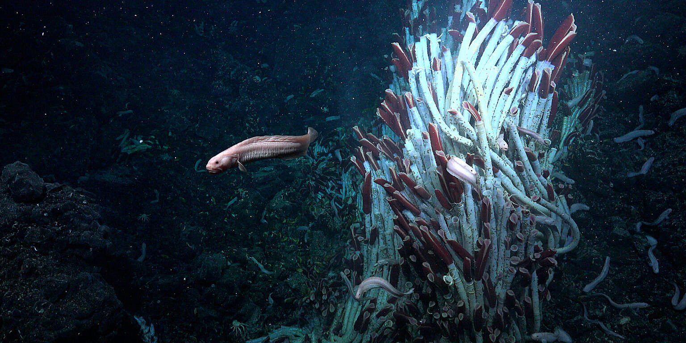

Исследователи обнаружили совершенно новую экосистему под морским дном Земли |
|
|
Акванавты Океанического института Шмидта исследовали плиты вулканической коры с гидротермальными источниками на дне Тихого океана и обнаружили там подземную экосистему, в которой кипит жизнь. Исследователи отметили, что это буквально целый новый мир на глубине примерно 2 500 метров, о существовании которого никто не знал. Что примечательно, эти гидротермальные жерла, извергающие горячие, богатые минералами жидкости, учёные обнаружили только в 1970-х. И несмотря на темноту этих глубин, вокруг отверстий, похожих на дымоходы, тоже кипела жизнь. Но за последние 46 лет никому и в голову не пришло заглянуть под источники. Снятие коры с морского дна при помощи глубоководного робота выявило красочную экосистему червей, улиток и хемосинтетических бактерий, которые для получения энергии полагаются не на солнечный свет, а на минералы. Особенно интересными учёные нашли трубчатых червей. Эти глубоководные существа могут путешествовать под морским дном через вулканические жидкости, чтобы колонизировать новые места обитания. Это может объяснить, почему так мало их детёнышей замечено вокруг глубоких вулканических трещин — большинство из них могут созревать под поверхностью. |
реклама реклама реклама реклама реклама реклама реклама реклама реклама реклама реклама реклама реклама реклама реклама реклама реклама реклама реклама реклама реклама реклама реклама реклама реклама реклама реклама реклама реклама реклама реклама реклама реклама реклама реклама реклама |
| реклама реклама реклама реклама реклама реклама реклама реклама реклама реклама реклама реклама реклама реклама реклама реклама реклама реклама реклама реклама реклама реклама реклама реклама реклама реклама реклама реклама реклама реклама реклама реклама реклама реклама реклама реклама | |
| реклама реклама реклама реклама реклама реклама реклама реклама реклама реклама реклама реклама реклама реклама реклама реклама реклама реклама реклама реклама реклама реклама реклама реклама реклама реклама реклама реклама реклама реклама реклама реклама реклама реклама реклама реклама |
Обратная связьНапишите нам | |
| Хисамутдинова А.М., 2024 |